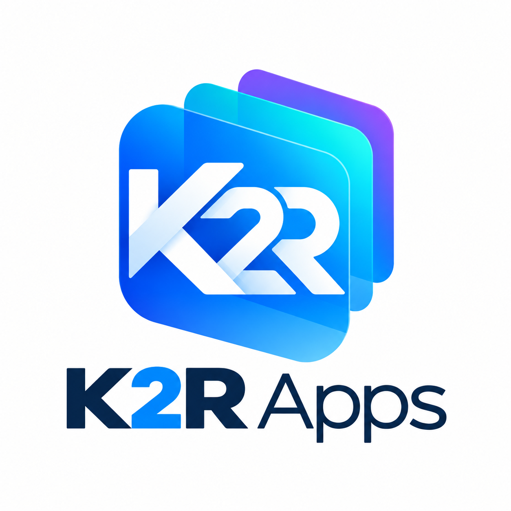
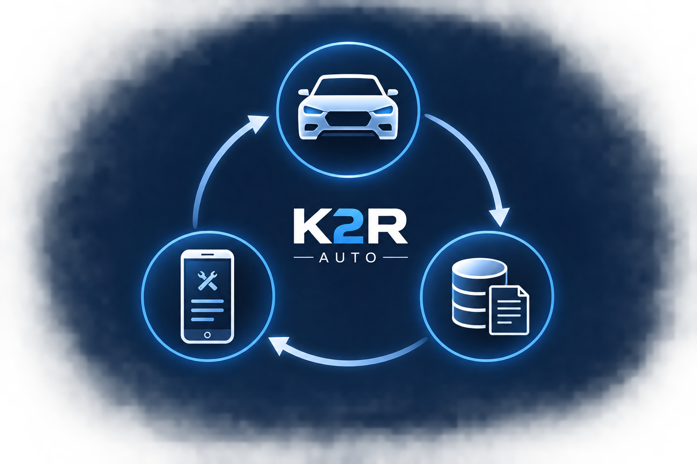

Identifier
Déterminer le véhicule et sa configuration technique.

K2R AppsK2R Auto · projet en développement
K2R Auto a pour objectif de simplifier la consultation d’informations techniques automobiles pertinentes, sans les sortir de leur contexte.

Le principe
Le service ne vise pas une bibliothèque générale de manuels. Il doit permettre d’accéder aux éléments utiles à une opération donnée, selon la configuration précise du véhicule.
Déterminer le véhicule et sa configuration technique.
Choisir l’entretien, la réparation ou le diagnostic concerné.
Présenter les informations techniques pertinentes dans un parcours clair.
Informations visées
Principe fondamental
Les valeurs techniques ne doivent pas être inventées, estimées ou présentées sans source. K2R Auto est conçu autour d’informations autorisées, traçables et adaptées au véhicule concerné.
État du projet
K2R Auto est actuellement en phase de définition de ses partenariats techniques et documentaires. Les droits d’accès, d’affichage, de présentation et les conditions économiques sont clarifiés avant tout déploiement du service.